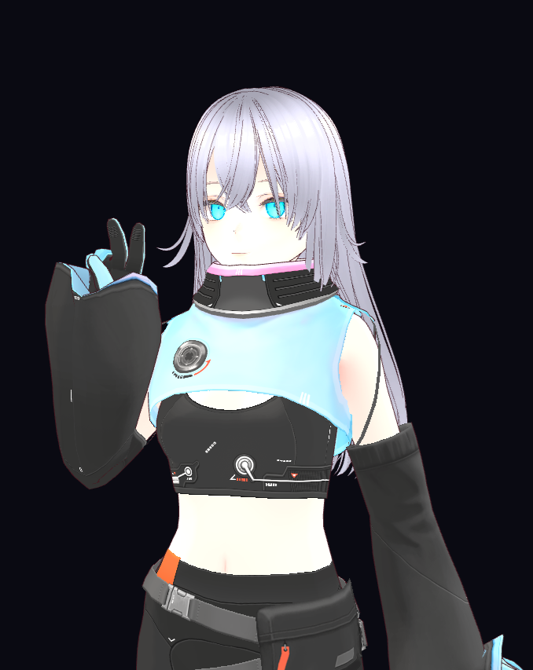

セッション管理 23・設定変更 13・ツール操作 11・情報表示 12・終了 1。`/` を入力すると TUI 補完が起動します。
`COMMAND_REGISTRY` に 60 の slash command が登録されている（Session 23、Configuration 13、Tools & Skills 11、Info 12、Exit 1）。
`/model` を引数なしで実行すると 2 段階の interactive picker が起動する。
コマンドは正規名 + alias で検索され、`cli_main.py` の `process_command()` で分岐処理される。
Session 23 コマンド、Configuration 13 コマンド、Tools & Skills 11 コマンド、Info 12 コマンド、Exit 1 コマンド。
`COMMAND_REGISTRY` は `CommandDef` dataclass のリストです。正規名 + alias で検索します。